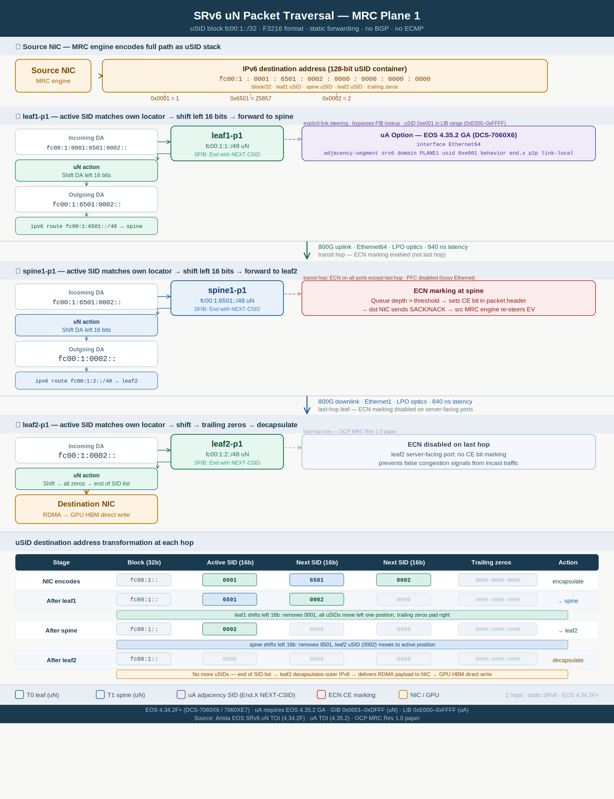

SRv6 Plane 1 — Packet Traversal
Step-by-step view of how an MRC training packet crosses Plane 1 using SRv6 uN (micro-node) segments. The diagram walks a single flow from a source NIC through leaf1-p1 → spine1-p1 → leaf2-p1 to a destination GPU, showing the 128-bit IPv6 destination address transformation at every hop.
This complements the Arista EOS SRv6 uN + uA configuration for the same plane and the broader SONiC vs Arista leaf/spine reference.
Scope
The example uses the Plane 1 addressing plan (fc00:1::/32 block, F3216 uSID format). Paths are static — no BGP, no ECMP, no dynamic routing. ECN marking follows MRC rules: enabled on transit hops, disabled on the last server-facing hop.
Topology and path
The worked example encodes a three-hop uN path (two transit switches plus destination leaf):
| Hop | Device | Role |
|---|---|---|
| 0 | Source NIC | Encapsulates outer IPv6 DA with uSID stack |
| 1 | leaf1-p1 | uN shift → static route to spine uN |
| 2 | spine1-p1 | uN shift → static route to leaf2 uN |
| 3 | leaf2-p1 | Final uN shift → decapsulate to destination NIC |
Encoded uSID stack (source → destination): leaf1 (0x0001) → spine1 (0x6501) → leaf2 (0x0002)
Diagram

uSID destination address transformation
Each transit switch matches the active 16-bit uSID against its local /48 locator, left-shifts the address by 16 bits, then performs a static FIB lookup on the shifted prefix.
| Stage | Block (32b) | Active SID | Next SID | Next SID | Trailing zeros | Action |
|---|---|---|---|---|---|---|
| NIC encodes | fc00:1:: |
0001 |
6501 |
0002 |
0000:0000:0000 |
encapsulate |
| After leaf1 | fc00:1:: |
6501 |
0002 |
0000 |
0000:0000:0000 |
→ spine |
| After spine | fc00:1:: |
0002 |
0000 |
0000 |
0000:0000:0000 |
→ leaf2 |
| After leaf2 | fc00:1:: |
0000 |
0000 |
0000 |
0000:0000:0000 |
decapsulate |
The 32-bit EV in the outer header (not shown in this diagram) is used for SACK/NACK feedback on the NIC — it does not participate in switch forwarding. See MRC Packet Structure.
uA adjacency segments (optional)
The diagram notes an uA (adjacency) option available in EOS 4.35.2 GA+. Where uN relies on post-shift FIB lookup, uA pins traffic to a specific egress interface using a uSID in the LIB range (0xE000–0xFFFF).
A source NIC can mix uN and uA in the same uSID container — for example, forcing leaf→spine egress via a particular uplink while keeping node segments elsewhere. Configuration examples and verification commands are in Arista EOS SRv6 uN + uA Config — Plane 1.
ECN and last-hop behavior
| Location | ECN marking | Rationale |
|---|---|---|
| leaf1 uplink, spine downlinks | Enabled | Transit hops signal congestion to the MRC NIC |
| leaf2 server-facing ports | Disabled | Last-hop rule — avoids false congestion signals from incast |
Platform and uSID ranges
| Item | Value |
|---|---|
| Platforms | Arista DCS-7060X6 / 7060XE7 |
| EOS | 4.34.2F+ (uN); 4.35.2 GA+ (uA) |
| uSID format | F3216 — 32-bit block + 16-bit uSID |
| uN range (GIB) | 0x0001–0xDFFF — node segments |
| uA range (LIB) | 0xE000–0xFFFF — adjacency segments |